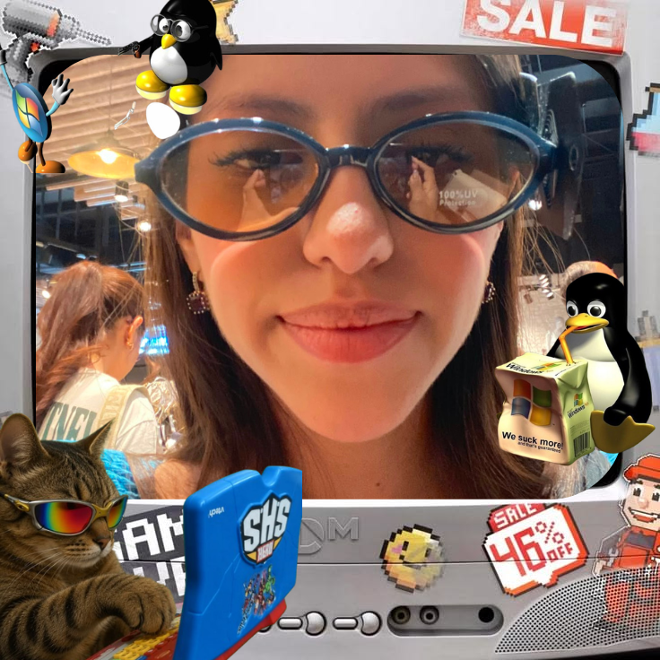

Estudiante de la carrera de ingeniería en sistemas computacionales TECNM
About Me
Me llamo Nancy Salcedo, tengo 22 años y soy estudiante de ingeniería en sistemas computacionales en el TECNM. Me apasiona la programación y el desarrollo web.
Siempre me he comparado con un pinguino, cuando era niña me encantaba jugar club penguin, tenía muchas mascotas y mi avatar era morado, creo que son realmente lindos.
Toda mi vida he practicado deportes, me encanta la natación, jiu jitsu brazileño, danza forlklórica y en especial el atletismo, correr es mi vida.
A lo largo de mi vida quise estudiar muchas cosas, entre esas derecho penal, me apasiona la política, pero la carrera es bastante cara si consideramos que vivo lejos de capital, entonces tuve que volver a mi ciudad, esudiando en el TECNM me di cuenta que me gusta mi carrera, en realidad es bastante gracioso porque al no saber nada de ingenirería y no saber que elegir, terminé mentiendo todas las carreras en una ruleta y cayó sistemas, estoy en 7mo, 8vo, 9no semestre (depende la hora) pero me di cuenta que me encanta industrial y gestión empresarial, entonces mi carrera la estoy orientando en gestión de proyectos de software, la cual es una sub-rama de mi carrera, también me interesa mucho la infraetructura cloud, pero ya hablaré de eso más abajo, btw.
Me encanta el anime, en especial One Piece, soy una gran fan desde hace varios años, hace poco estuve en CDMX y pude ir a "hachi", la cafetería temática y tengo una foto con Luffy, lol.
Soy cristiana y disfruto mucho de congregarme en Sinaí, apenas el año pasado pude bautizarme y hacer una declaración pública de mi amor por Cristo, este año fui a un campamento de jóvenes en Huapoca y es una experiencia que considero, todos deberíamos de vivir al menos una vez en la vida.

Información de mis proyectos y habilidades técnicas
Soy líder de un UG de AWS en Chihuahua capital desde hace más de 1 año, hacemos meetups seguido y participamos con retos prácticos en hackathones, me gusta mucho aprender y enseñar, suelo ser una persona curiosa, otros le dicen metiche jajajan´t. Eso no importa, porque gracias a mis ganas de querer conocer todo, tuve la oportunidad de dar una conferncia en TalentLand este 2026
Soy ingeniera certificada por Personal Academy como Lean Six Sigma Black Belt y he trabajado en proyectos de mejora continua en el área industrial en empresas como Continental solucionando problemas de sobreproducción de piezas y optimizando procesos en el área de AC con un sistema RMA, orientando la planta a la industria 4.0, también he trabajado en proyectos de mejora continua en el área de software, optimizando procesos de desarrollo y entrega de software con metodologías ágiles como Scrum y Kanban.
Por el momento, mi proyecto más ambicioso es OpLine, que es un sistema para detección de tiempos muertos, lo presentamos en la reunión mensual de mejora continua de Index Chihuahua.
No me puede faltar el evento más grande de los tecnológicos, Innovatec 2026 donde con mi proyecto SecurIA Fem acreditamos a la nacional, consiste en un botón de pánico para ayudar a combatir la violencia intrafamiliar, en alianza con Ficosec Delicias, un wereablem, app web y móvil e inteligencia artificial para detectar niveles de estrés en la voz.
- Lenguajes: HTML, Java, Python, CSS, SQL, ensamblador, Java, C#, Dart
- Lo que mejor se me da: automatizar con Python lo que me da flojera hacer a mano
- Lo que sigo aprendiendo: JavaScript, React y Node.js
- Áreas que me llaman la atención: infraestructura cloud y mejora continua
- Herramientas: Git, VS Code, Figma
- Cómo trabajo: aprendo rápido cuando la fecha de entrega ya está encima
- Superpoder blando: explicar cosas técnicas sin hacer sentir tonto a nadie
- Combustible para programar: café y una playlist kpop muy kawaii
- Mi mayor talento: romper mi código "arreglándolo"

Mis Choco-Aventuras
- Aventura 1: Carreras de distancia, porque un 5k NO ES UN MARATÓN
- Aventura 2: Subir al cerro (y quejarme todo el camino jaja)
- Aventura 3: Hackathones con mi UG de AWS
- Aventura 4: Ir a TalentLand y dar una conferencia, lol
- Aventura 5: Comprar un changuito mión
- Aventura 6: Pintarme en un puesto de Chapultec la cara por $300 (es un robo) con el amor de mi vida antes de saber que era el amor de mi vida

Preguntas Frecuentes
¿Por qué estudias Sistemas si querías Derecho?
Porque la carrera era cara y vivo lejos de la capital. Al final metí todas las carreras en una ruleta y cayó Sistemas, y resultó que me encanta.
¿En qué semestre estás realmente?
En 7mo, 8vo o 9no, depende de la hora y de a quién le preguntes.
¿Qué haces en el UG de AWS?
Lidero el grupo en Chihuahua capital. Hacemos meetups y participamos en hackathones con retos prácticos.
¿Qué es SecurIA Fem?
Un botón de pánico para ayudar a combatir la violencia intrafamiliar. Con él acreditamos a la nacional de Innovatec 2026.
¿Por qué un pingüino?
Siempre me he comparado con uno desde que jugaba Club Penguin. Mi avatar era morado, por cierto.
¿Realizas proyectos por encargo?
Sí, me puedes contactar para apoyarte con tus proyectos.
¿Cómo te puedo pagar?
Por transferencia.